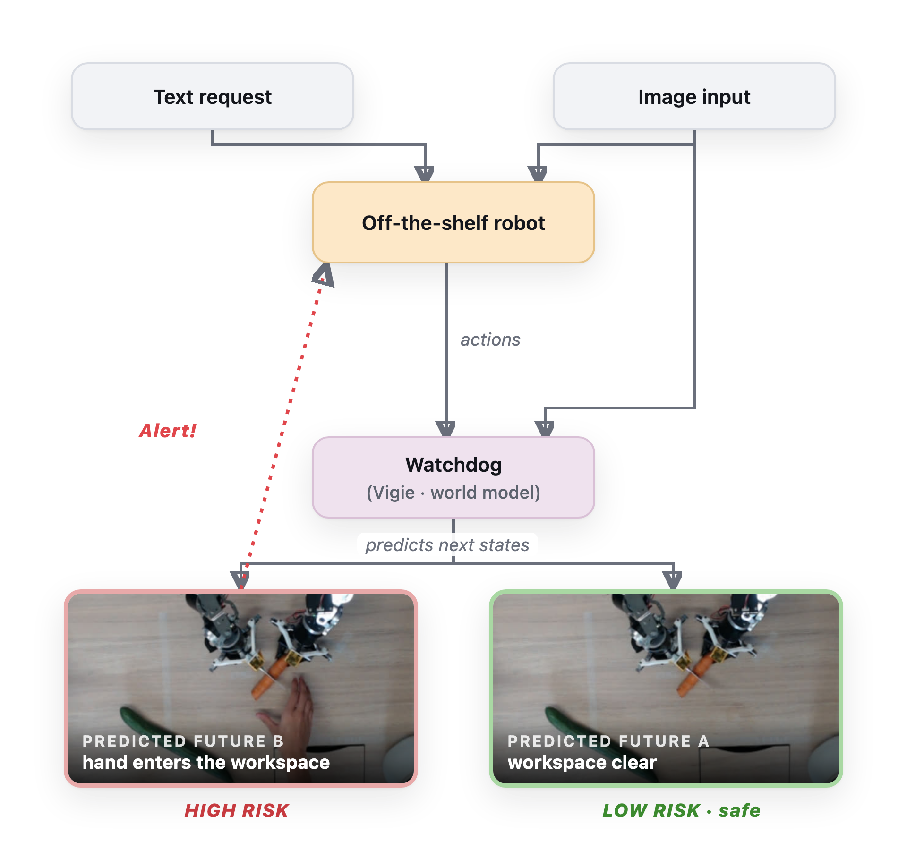
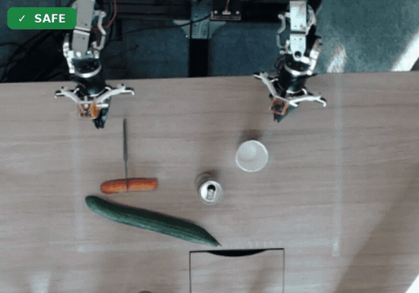
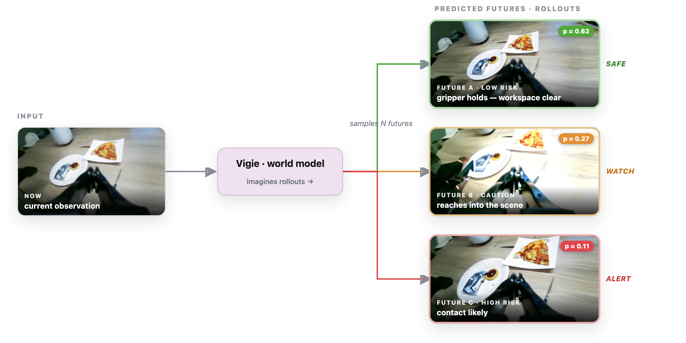
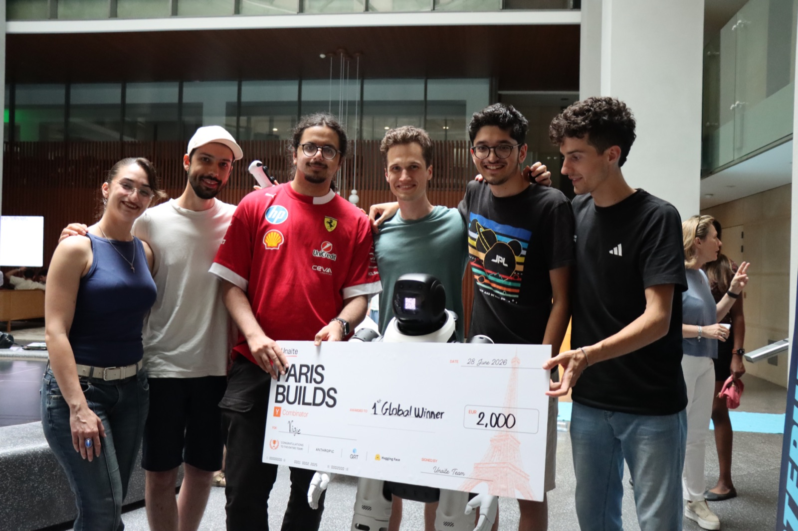

Predicting danger before it happens: building Vigie, a world-model safety watchdog for robots
- Problem. Learning-based robot policies are opaque black boxes; you can't certify their weights, and a reactive safety layer that fires after contact is just an incident report.
- Vigie. An external, embodiment-agnostic watchdog that watches any robot through ordinary cameras and predicts danger before it happens — it treats the robot as a black box and judges only observed behavior.
- Key idea. Couple a VLA (semantics / common sense — “a knife is dangerous”) with a world model (physics — how the scene will evolve). The fused verdict combines a semantic danger term \(d_{\text{sem}}\) and a physical surprise term \(s_{\text{phys}}\).
- Substrate. Both condition on a fast geometric layer: open-vocab segmentation (YOLOE) + Segment Anything + MediaPipe with PCA blade-geometry → a deterministic <100 ms reflex layer.
- World model. LeWorldModel (LeWM), the latest JEPA from LeCun et al. (2026): ~15M params, end-to-end from pixels with a single Gaussian regularizer, plans ~48× faster than foundation-model world models, and its own surprise signal is the physical danger detector — danger is surprise.
- Result. 🏆 1st Global Prize at the YC Paris × Unaite Hackathon, in ~36 hours.
Learning-based robots are about to enter our homes. Imitation-learned and RL policies are astonishingly capable — and fundamentally opaque. They are black boxes that can fail in ways nobody wrote down, and “trust the policy” is not a safety strategy you can sell to an insurer. Our bet at the hackathon was simple: don't try to verify the robot's weights. Instead, put an independent, external observer next to it, watch what it actually does through ordinary cameras, and predict dangerous outcomes before they happen. We called it Vigie — the world-model safety watchdog for any robot.
The thesis: measure behavior, don't trust intent
Most “robot safety” either lives inside the policy (a reward term, a constraint in the planner) or relies on hard-coded geometric fences. Both break the moment the robot does something the designers didn't anticipate — which is exactly the regime learning-based control lives in. We took the opposite stance, which we framed as the “crash-test / SOC 2 for robotic safety” view:
- Empirical, not simulated. Every judgment comes from the real camera feed.
- External and embodiment-agnostic. Vigie doesn't need the robot's model, its action stream, or its intentions. It observes the scene the way a supervisor standing in the room would — so the same watchdog wraps an arm, a humanoid, or a desktop robot.
- Predictive, not reactive. A safety layer that fires after contact is an incident report. We wanted to imagine the near future and veto danger before it materialises.
We anchored the first demo in the kitchen — roughly 47% of household injuries happen there — with two OpenArm arms manipulating knives, a can, a cup and vegetables on a worktop.
The core idea: couple a VLA with a world model
A watchdog has to answer two orthogonal questions, and no single model answers both well:
- What is dangerous? — semantic, common-sense knowledge. That a blade is sharp, that a hand next to it is at risk, that boiling water burns. This is world knowledge, and it is exactly what a VLA (Vision-Language-Action) model supplies: an open-vocabulary, common-sense prior over objects, affordances and hazards.
- What will happen next? — physical prediction. How the scene evolves under the robot's motion: will that trajectory carry the gripper into the hand? This is dynamics, and it is what a world model provides.
Vigie's contribution is to couple the two. The VLA grounds the scene semantically (“this is a knife, aimed at a hand — dangerous”); the world model rolls the scene forward in latent space and flags physically implausible or surprising futures. Semantics without prediction is blind to when; prediction without semantics is blind to what matters. The verdict is a fusion of a semantic danger term and a physical surprise term:
\[ \text{danger}(t) \;=\; \Phi\big(\, \underbrace{d_{\text{sem}}}_{\text{VLA — common sense}},\; \underbrace{s_{\text{phys}}}_{\text{world model — physics}} \,\big) \]
Architecture: fusing the two tracks with a fast geometric substrate
Underneath the VLA and the world model sits a fast geometric layer that both of them condition on, because safety questions live at very different timescales. “Is a blade tip about to touch a finger?” needs a sub-100 ms reflex; “is this whole scene subtly unsafe?” can afford a second or two. So Vigie runs each component at its natural cadence and fuses them into one verdict.

Layer 1 — Perception with fine geometry
A bounding box is not enough for safety. A box around a knife can't tell you which way the blade points, and “knife near hand” is a very different situation from “knife tip aimed at a finger.” So the perception layer recovers precise geometry:
- Open-vocabulary segmentation (YOLOE). Instead of a fixed COCO class list, we
describe hazards in plain words —
knife,cleaver,flame,boiling water,hand,child,robot gripper… — and YOLOE segments and classifies whatever we prompt. Adding a new hazard is literally adding a word to a list. - Hand landmarks (MediaPipe). 21 landmarks give us real fingertips, not just a person box — the difference between a coarse proximity heuristic and precise tip-to-finger distances.
- Blade orientation via PCA. The segmentation mask of a knife is a long, thin blob, so its first principal component is the blade axis and the extreme points along it are the tip and the handle. From the mask we recover the tip location, the pointing direction, and can finally ask the question safety actually cares about: is the tip close to, and pointed at, a hand?

Layer 1.5 — A deterministic reflex layer
On top of that geometry sits a small, fully deterministic rule engine — the fast reflexes that run every frame in well under 100 ms. These are the high-frequency hazards where sub-second reaction matters, and where you want a rule you can explain to an auditor, not a neural net:
# src/config.py — the thresholds are the demo
blade_tip_to_hand_px = 90.0 # tip this close to a fingertip -> danger
blade_aim_angle_deg = 30.0 # blade axis vs tip->hand vector; small = aimed straight at
object_to_hot_px = 90.0 # object approaching a hot zone (stove/oven)
fragile_speed_px = 45.0 # fragile object moved this fast -> drop/shatter riskEach rule is a cheap geometric predicate over the fine perception output: blade-tip → nearest fingertip distance, blade aim angle (is it pointing at the hand?), fragile object fast-motion, object near a hot zone. If any fires, we escalate immediately — no waiting on a model call.
The semantic track — a VLA for common-sense danger
Rules are precise but literal; they only catch hazards we thought to encode. The VLA track supplies the open-ended common-sense knowledge — a knife is sharp, a child in the workspace is at risk, a tipping pot will scald — that no fixed rule set enumerates. Built on Claude vision, it sees the annotated frame plus the geometric facts we already computed, and returns a structured verdict (the semantic danger term \(d_{\text{sem}}\)):
VERDICT_SCHEMA = {
"dangerous": bool,
"severity": "none" | "low" | "warning" | "critical",
"category": str, # open-vocabulary hazard type
"rationale": str, # plain-language reason — the audit-log artifact
"recommended_action": "none" | "monitor" | "slow_down" | "stop",
}
Two design choices mattered here. First, structured outputs: by constraining the
model to this JSON schema we always get a machine-usable verdict, and the rationale
field is exactly the human-readable artifact an insurer or a safety audit wants. Second,
cadence: a vision API call takes 1–4 s, so it can't run at 30 fps — and
we didn't pretend otherwise. The reflex layer gives instant reactions; the VLM runs
asynchronously in the background (~1.5 s cadence) so it never stalls the loop, and
the overlay always shows its latest verdict. Being an independent external observer, its system
prompt is explicit: do not trust what the robot intends — judge only the observed scene.
The world model: LeWorldModel
The physical-prediction half is LeWorldModel (LeWM) — LeCun et al. (arXiv:2603.19312, 2026), the first JEPA that trains end-to-end from pixels with a single anti-collapse regularizer. Stated as equations rather than prose:
Encoder + predictor — predict the next embedding, not the next pixels:
\[ z_t = f_\theta(x_t), \qquad \hat z_{t+1} = g_\phi\!\left(z_t,\, a_t\right) \]
Objective — two terms only (vs. ~6 in prior end-to-end JEPAs):
\[ \mathcal{L}(\theta,\phi) = \underbrace{\big\lVert\, g_\phi\!\big(f_\theta(x_t),a_t\big) - f_\theta(x_{t+1}) \,\big\rVert^2}_{\text{next-embedding prediction}} \;+\; \lambda\, \underbrace{\mathcal{R}_{\text{SIGReg}}\!\big(\{z\}\big)}_{\substack{z \,\sim\, \mathcal{N}(0,\mathbf{I}) \\ \text{prevents collapse}}} \]
SIGReg (the Gaussian-latent regularizer) replaces EMA targets, stop-gradients and frozen pretrained encoders. \(\approx\)15M params · 192-d tokens · single GPU · a few hours.
Planning by imagination — roll actions out in latent space, keep the safe ones (Cross-Entropy Method; \(\sim\)48× faster than foundation-model world models):
\[ a^{\star}_{t:t+H} = \arg\min_{a_{t:t+H}} \; \mathbb{E}\!\left[\, \sum_{k=0}^{H} C\!\big(\hat z_{t+k}\big) \,\right] \]
Surprise \(=\) danger — calibrate on safe operation; the physical-danger score \(s_{\text{phys}}\) is the model's own prediction error (low likelihood under the learned latent):
\[ s_{\text{phys}}(t) = \big\lVert\, f_\theta(x_{t+1}) - g_\phi\!\big(f_\theta(x_t),a_t\big) \,\big\rVert^2 \;\uparrow \;\;\Longrightarrow\;\; \text{physically implausible} \]

The generative half — imagine, then veto
LeWM reasons in latent space; for the demo's tangible “wow” we paired it with a generative preview. From the current frame, a pretrained video diffusion model (Stable Video Diffusion) imagines a short future clip, and we score each predicted frame for danger with few-shot CLIP anchors (a handful of example “safe” vs “dangerous” frames). If an imagined future looks dangerous, Vigie raises a preventive VETO — before the robot has moved. The latent LeWM track is the fast, principled danger estimator; the diffusion track is the human-legible picture of what it thinks is about to happen.
Both world-model tracks run fully async as periodic “deep glances,” never blocking the sub-100 ms reflex loop. Even at ~1 s per LeWM plan (and seconds per diffusion clip on a GPU), layering them as a slow, holistic sanity check above the fast geometric rules — rather than trying to force a per-frame world model — is what kept the live demo responsive while still catching danger ahead of time.
Putting it together: the control room
We wrapped the whole stack in a single dashboard — the artifact we actually pitched. Two live camera feeds (gripper + head cam), a frame-by-frame safety timeline, the decoded-future rollouts coloured by predicted risk, a streaming safety log with per-decision rationales, and a system status panel showing the current mode (RUNNING / REVIEW / BLOCKED) and risk score. You can toggle the perception stack (segmentation, depth, detection) live and dial the safety thresholds from the same UI.
What I'd build next
A few honest limitations we'd tackle with more than a weekend. Distances are currently in
pixels (image space); a real rig would calibrate to centimetres with a known-size
reference or a depth camera. The perception model is off-the-shelf, so “stove” and “robot arm”
are proxied rather than natively detected — a model fine-tuned on kitchen and robot-arm classes is
the obvious upgrade. And the recommended_action field (stop /
slow_down) is the natural hook into a real kill-switch or robot-control integration,
closing the loop from watching to intervening.
The result
Thirty-six hours later, Vigie took the 1st Global Prize. What resonated with the judges wasn't any single model — it was the framing: safety as an external, measurable, predictive layer that treats the robot as a black box and still catches danger before it happens. That's the piece the industry will need as learning-based robots leave the lab.

References
- L. Maes, Q. Le Lidec, D. Scieur, Y. LeCun, R. Balestriero. LeWorldModel: Stable End-to-End Joint-Embedding Predictive Architecture from Pixels, arXiv:2603.19312, 2026. (project page)
Built with a great team over one very long weekend. Stack: Python, YOLOE & Segment Anything, MediaPipe, Claude vision (structured outputs), LeWorldModel and Stable Video Diffusion, on OpenArm / LeRobot.